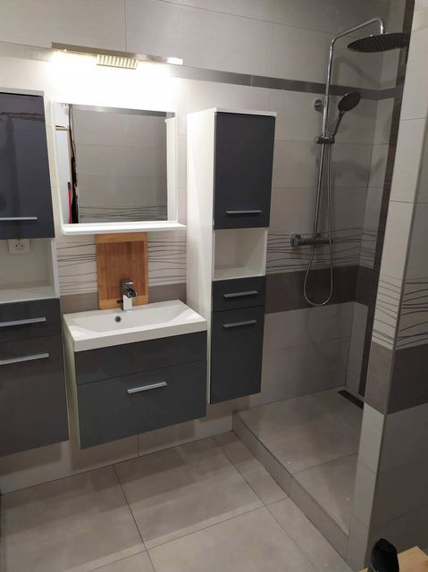
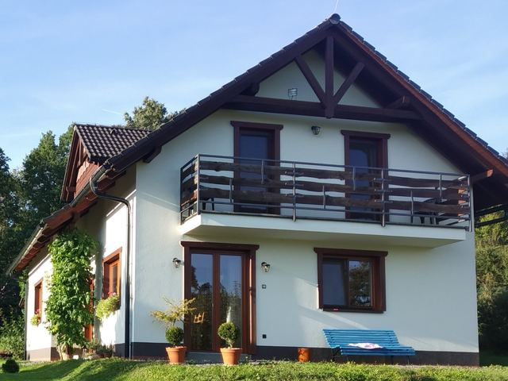
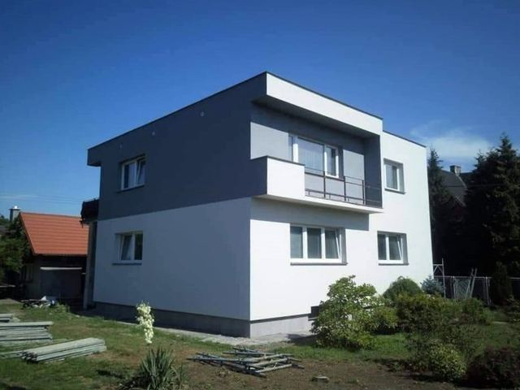
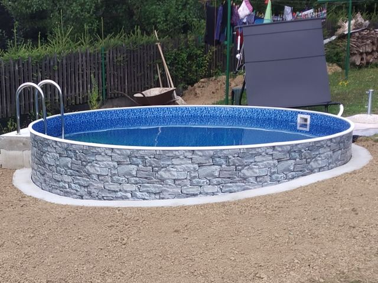

Stavíme a rekonstruujeme poctivě a na klíč
Rekonstrukce bytů a koupelen, stavby rodinných domů, zateplení fasád i zámková dlažba. Postaráme se o vše od prvního kopnutí až po úklid staveniště.
- Nacenění zdarma
- Stavby na klíč
- Dokončení v termínu
Co pro vás postavíme
Od koupelny v paneláku až po novostavbu rodinného domu. Práci provádíme sami a další profese zajistíme přes ověřené partnery.

Rekonstrukce bytů
Bytová jádra, koupelny a WC, obklady, dlažby, sádrokartony, krby, podlahy a dveře.
Zobrazit práce
Rodinné domy
Novostavby na klíč i rekonstrukce stávajících domů podle projektu a vašich představ.
Zobrazit práce
Zateplení fasády
Zateplení fasád a půd polystyrenem nebo minerální vatou, nové omítky a nátěry.
Zobrazit práce
Dlažby, ploty, bazény
Zámková dlažba, chodníky, ploty s bránou a zahradní bazény včetně výkopů.
Zobrazit práceProč si vybrat Zednictví Sliž
Stavby a rekonstrukce na klíč
Postaráme se o všechno a stavbu vám předáme hotovou přesně podle dohody.
Osobní přístup
Bezplatná schůzka přímo na místě stavby a férové nacenění požadovaných prací.
Dlouholetá zkušenost
Přes 31 let zednických prací, montáží oken a dveří, malířských a natěračských prací.
Zajistíme další profese
Spolupracujeme s odborníky na elektřinu, vodu, plyn, topení, krby, klimatizace, truhlářské a tesařské práce.
Dokončíme včas
Stavbu dokončíme v termínu, na kterém se společně dohodneme.
Uklidíme po sobě
Před předáním stavbu kompletně uklidíme a zajistíme odvoz sutě.
Od prvního telefonátu po předání
Zavoláte nám
Popíšete, co potřebujete. Rádi poradíme i s tím, kde začít.
Prohlídka zdarma
Přijedeme na místo, vše změříme a probereme vaše představy.
Cenová nabídka
Připravíme přehlednou nabídku a domluvíme termín realizace.
Realizace a předání
Práci provedeme kvalitně, včas a stavbu předáme uklizenou.
Naše realizace
Výběr z hotových zakázek. Další fotky najdete u jednotlivých služeb.


Zedník pro Třinec a okolí
Sídlíme v Bystřici a pracujeme hlavně v Třinci a v obcích kolem. Po domluvě rádi přijedeme i dál.
Časté dotazy
Kolik stojí nacenění zakázky?
Nic. Přijedeme k vám, prohlédneme místo stavby, probereme vaše představy a připravíme cenovou nabídku zdarma a nezávazně.
V jakých lokalitách pracujete?
Nejčastěji v Třinci, Bystřici a okolních obcích – Vendryně, Hrádek, Nýdek, Návsí, Jablunkov, Český Těšín a dále v okrese Frýdek-Místek.
Zajistíte i elektřinu, vodu nebo topení?
Ano. Dlouhodobě spolupracujeme s ověřenými elektrikáři, instalatéry, topenáři, odborníky na krby a klimatizace, truhláři i tesaři, takže se o koordinaci profesí nemusíte starat.
Uklidíte po sobě?
Samozřejmě. Před předáním stavbu kompletně uklidíme a zajistíme odvoz sutě.
Plánujete stavbu nebo rekonstrukci?
Přijedeme k vám, prohlédneme místo a zdarma připravíme cenovou nabídku.